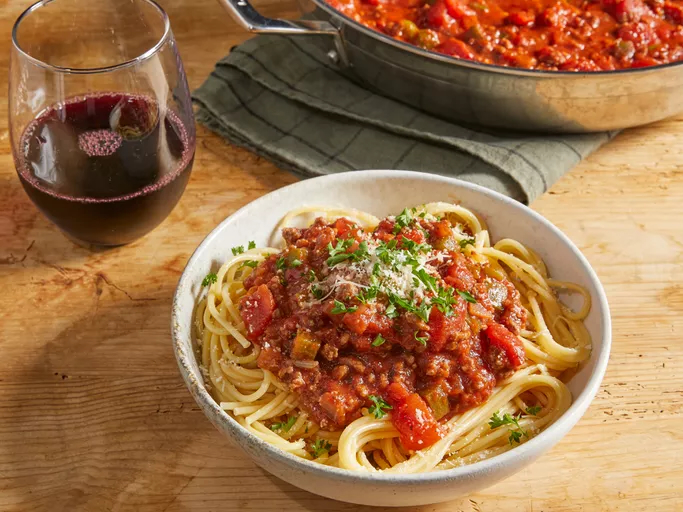

Spaghetti
Home

Description:
There's nothing like classic spaghetti and meat sauce to bring people together around the dinner table. This homemade spaghetti sauce with ground beef recipe will satisfy all your comfort food cravings.
Ingredients
- 1 lb ground beef
- 1 medium onion, chopped
- 4 cloves garlic, minced
- 1 small green bell pepper, diced
- 28 oz diced tomatoes
- 16 oz tomato sauce
- 6 oz tomato paste
- 2 tsp dried oregano
- 2 tsp dried basel
- 1 tsp salt
- 0.5 tsp ground black pepper
Directions:
- Combine ground beef, onion, garlic, and green pepper in a large saucepan over medium-high heat. Cook and stir until meat is browned and crumbly and vegetables are tender, 5 to 7 minutes. Drain grease.
- Stir diced tomatoes, tomato sauce, and tomato paste into the pan. Season with oregano, basil, salt, and pepper. Simmer spaghetti sauce for 1 hour, stirring occasionally.
- Serve hot and enjoy!